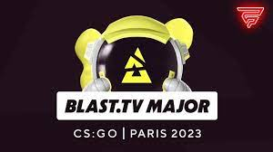

Counter Strike 2
La desarrolladora del juego, Valve, comunicó el lanzamiento, que tendrá mejoras "históricas" y el que podrá ser descargado de manera gratuita en las próximas semanas. Quiénes podrán jugar la versión de prueba.

Tras semanas de expectativa, Counter-Strike 2 ya tiene fecha de lanzamiento y, para algunos jugadores, podrá ser testeado parcialmente a partir de hoy, comunicó oficialmente la compañía desarrolladora Valve, que lanzó un sitio web en el que explica los detalles del juego que cuenta con "el avance técnico más importante de la historia de Counter Strike".
BLAST organizará el primer Major de 2023 en Francia
Francia será sede del primer Major de CSGO en 2023. Así lo anunció el nuevo organizador, BLAST, que viene de realizar un excelente trabajo en los últimos años con su circuito. Será la primera vez del país galo como escenario de uno de los torneos más importantes del mundo.
Este anuncio se produce tras las declaraciones del presidente francés Emmanuel Macron en abril de este año, cuando manifestó su deseo de que Francia acogiera en el futuro eventos de esports de primer nivel y se convirtiera en el "país de los videojuegos".